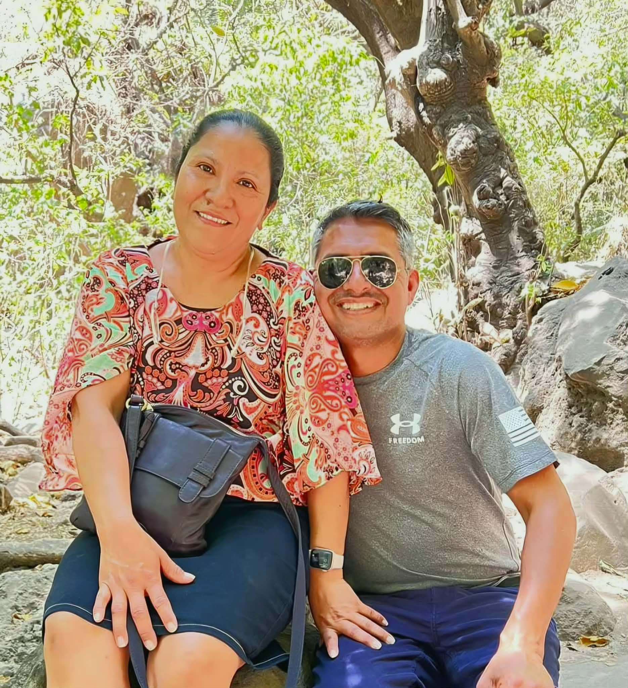
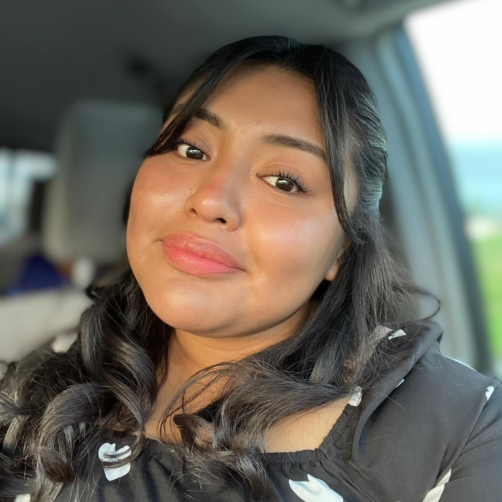

Con amor y pasion por el evangelio, el Pastor Jacobo y su esposa Carla lideran la Iglesia Fuente de Vida con un corazón de servicio. Su vision es alcanzar a cada familia de Madison con el mensaje de esperanza y salvacion de Jesucristo.
Conoce a los pastores que lideran nuestras redes ministeriales.

El Copastor Luis Rosas e Izcel lideran la Red Verde con un corazón apasionado por el evangelismo y un compromiso firme con la visión de Fuente de Vida. Como copastor, Luis trabaja de la mano con el Pastor Jacobo para guiar y fortalecer la iglesia, llevando el mensaje de salvación a cada rincón de la comunidad.

Omar y Maria sirven con una visión clara: alcanzar familias para Cristo y verlas crecer en la fe. Su pasión por el evangelismo los impulsa a tender puentes entre la comunidad y la iglesia, sembrando esperanza en cada hogar que tocan.

Jorge y Brenda lideran la Red Rosa con un corazón enfocado en las familias y el evangelismo. Su misión es ver hogares restaurados y fortalecidos en la Palabra de Dios, creyendo que cada familia transformada es una semilla que cambia una comunidad entera.

Omar y Lety sirven a la Red Azul con pasión por el evangelismo y un amor genuino por las familias. Creen firmemente que el evangelio tiene el poder de sanar y unir hogares, y esa convicción guía cada paso de su ministerio.

Ricardo y Noemi lideran la Red Roja con un llamado firme al evangelismo y al fortalecimiento de las familias. Su corazón es ver a cada persona encontrar en Cristo la esperanza que transforma vidas y restaura hogares.

Jenifer lidera la Red Guinda con una pasión desbordante por la generación joven. Su corazón es ver a los jóvenes de Madison encontrar su identidad en Cristo y convertirse en evangelistas de su propia generación, llevando el mensaje de vida a quienes más lo necesitan.
Únete a nosotros en persona cada domingo y vive la experiencia completa.